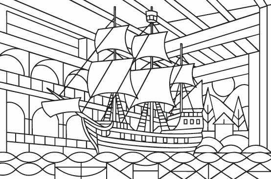
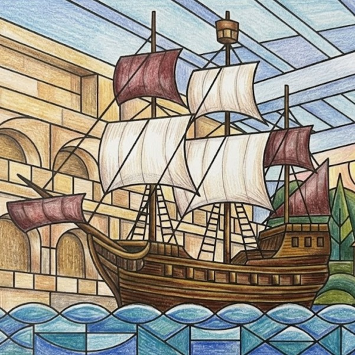

Stockholm City Hall
One of the places or cultural icons featured in our Stockholm colouring book, Stockholm City Hall is reimagined with clean geometric shapes and room for creative colour.
Discover the architecture, neighbourhoods and everyday icons of Stockholm through clean Bauhaus-inspired line illustrations, ready for your colours.
From Stockholm City Hall to City Bikes, this edition explores the sights, local culture and visual character of Stockholm through a gallery of line illustrations.
Designed for adults who love travel, architecture and creative downtime, the pages use bold composition and open spaces for mindful colouring.
VIEW THE STOCKHOLM BOOK

PREVIEW: STOCKHOLM · LINE ART & COLOUR
Discover the places and details that inspired the illustrations in this edition.
One of the places or cultural icons featured in our Stockholm colouring book, Stockholm City Hall is reimagined with clean geometric shapes and room for creative colour.
A cultural highlight in Stockholm, Vasa Museum brings art, architecture and creative life into this city-inspired colouring collection.
One of the places or cultural icons featured in our Stockholm colouring book, Gamla Stan Rooftops is reimagined with clean geometric shapes and room for creative colour.
Part of the rhythm of getting around Stockholm, Stockholm Metro becomes a graphic study in lines, forms and everyday movement.
Fika adds a taste of local everyday culture to the Stockholm collection, with shapes and details ready for your own palette.
Södermalm captures a piece of Stockholm street life, from its built environment to the small details that make a neighbourhood memorable.
One of the places or cultural icons featured in our Stockholm colouring book, Swedish Dala Horses is reimagined with clean geometric shapes and room for creative colour.
A cultural highlight in Stockholm, Stockholm Public Library brings art, architecture and creative life into this city-inspired colouring collection.
A cultural highlight in Stockholm, Skansen Museum Houses brings art, architecture and creative life into this city-inspired colouring collection.
One of the places or cultural icons featured in our Stockholm colouring book, Scandinavian Furniture is reimagined with clean geometric shapes and room for creative colour.
One of the places or cultural icons featured in our Stockholm colouring book, Djurgården Ferris Wheel is reimagined with clean geometric shapes and room for creative colour.
Water, movement and the city meet at Archipelago Boats, offering a distinctive scene to explore through geometric lines and colour.
One of the places or cultural icons featured in our Stockholm colouring book, Concert Hall is reimagined with clean geometric shapes and room for creative colour.
One of the places or cultural icons featured in our Stockholm colouring book, Drottningholm Palace is reimagined with clean geometric shapes and room for creative colour.
One of the places or cultural icons featured in our Stockholm colouring book, Strandvägen is reimagined with clean geometric shapes and room for creative colour.
A cultural highlight in Stockholm, ABBA the Museum brings art, architecture and creative life into this city-inspired colouring collection.
One of the places or cultural icons featured in our Stockholm colouring book, City Bikes is reimagined with clean geometric shapes and room for creative colour.
Explore the Stockholm edition and the wider Page Craft Studio city colouring book collection.